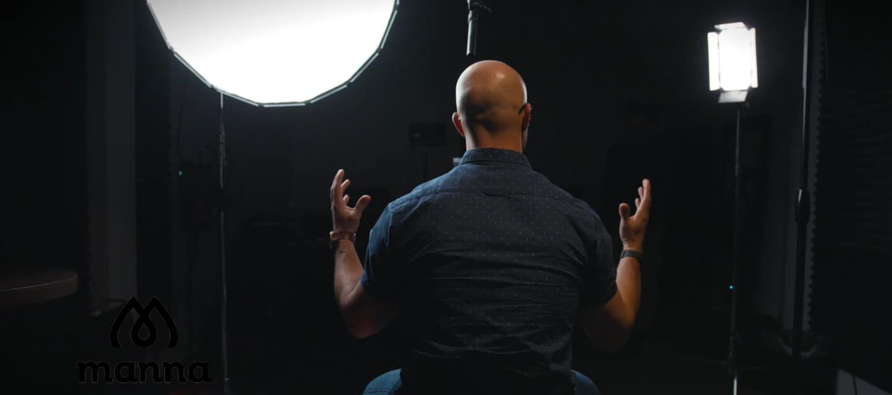

Blog
Writing for men of the Church
Identity, victory, protection and the promises of God, written by Tim Couet for men who want to win.

Start here · Post 01
Why Blog Prodigal Man?
This is the cry of men in the Church around the United States and in most of the developed world. The era of the sitcom idiot dad has penetrated the culture and the damage it has done to generations of boys, girls and...
Read the postIdentity: How did God make the man?
Like most men, I'm a product of my environment and influences. Even growing up in an awesome and heavily influenced Christian home, I wasn't taught how God...
Read Post 03JESUS: Wimpy and Passive? Think Again.
My last post explored how men are experiencing a full fledged attack on their Godly assignment as a protector. Going hand in hand with this is culture's...
Read Post 04When Protector's Protect...
So what happens to society and culture when protector's protect? Like everything in God's word when we act out of obedience to His word, everyone wins. When...
Read Post 05Who are the Prodigal Men?
After my first few blog posts I began to realize that I hadn't quite explained what a "Prodigal Man" is. Taken from the story of the Prodigal Son, the Prodigal...
Read Post 06Choose Your Soil
If you’re reading this blog post you probably have been around church long enough have heard the parable of the sower found in Matthew 13:3-9. In the parable...
Read Post 07Humility and Holy Confidence
I believe often times that men of church are so poorly programmed by the world that they can't tell the difference between roll-over into submission humility...
Read Post 08Is Victory Conditional? It Depends.
As Christian men we have a deep desire and craving for victory whether we realize it or not. To live the victorious Christian life that so many of us desire we...
Read Post 09The Secret to Killing Your Secret Sin.
As Christian men our sin can keep us neutered from our effectiveness and destroy our own self worth, further making us feel unworthy and ineffective. This is a...
Read Post 10Want to Win? Understand Your Nature.
Today I want to look at how understanding our nature can give us a leg up on satan's attacks and his desire to destroy us as men. Sadly, I believe that our...
Read Post 11The Master Artist and His Image
While I attended Eckerd College in St. Petersburg Florida in 2006, or sometime shortly after, Tibetan Monks came to the campus to create what they call a sand...
ReadKeep going